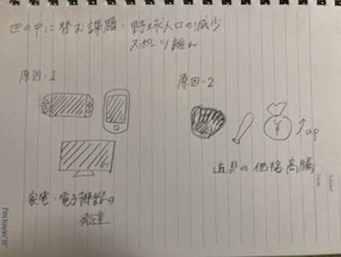

課題：日本・世界における野球人口の減少（子どものスポーツ離れ）

原因1：家電・電子機器の発達
原因2：道具の価格高騰
解決案1：定期イベントの開催
目的：スポーツをやるハードルを下げる
解決案2：競技マイナー国への道具の販売
目的：
- 競技に触れる機会づくり
- 競技周知のため
- 競技者に続けてもらうため
競技マイナー国では、道具が手に入りにくく、さらに高い傾向がある。（需要がないから）
現在は、円安の状況であり、輸出すると、道具の販売価格が抑えて販売できる。
競技マイナー国に日本に溢れかえっている個人メーカーの商品を売り出す。
そうすることで、新たに競技を楽しむ人が増え、需要の拡大にもつながり得るのではないか、と考える。
前のページへ戻る